class: challenge ## Matchsticks There are `N` matchsticks in total. They are numbered from `0` to `N−1` inclusive. The `i`th matchstick takes `bi` time to burn when lighted at one end, and it burns at a uniform rate. If lit at both ends simultaneously, the matchstick will take only half of the original time to burn down. Arrangement: Ally ties rear end of the all the matchsticks together and the front end is kept free. The matchstick numbered `i` is adjacent to matchstick numbered `i+1` for all `0 <= i <= N−2`. Bodies of matchsticks do not touch each other, except at the rear end. Task: There are Q queries, in each query we ask: If Ally lights the free end of all matchsticks numbered between `L` and `R` inclusive, what will be the time needed for all matchsticks to get completely burnt? --- class: challenge .left-column2[ ## Matchsticks __Input__ First line of input contains a single integer `N`. The next line contains `N` space separated integers, the `i`th of which is `bi`. The next line contains a single integer `Q`. The next `Q` lines each contain two space separated integers: `L` and `R`. The `i`th line represents the `i`th query. __Output__ For each query, print the answer on a new line. ] .right-column2[ __Input__ ``` 1 5 1 0 0 ``` __Output__ ``` 5.0 ``` __Input__ ``` 4 3 5 9 1 2 0 1 2 3 ``` __Output__ ``` 12.0 6.0 ``` __Input__ ``` 18 3 4 2 1 5 7 9 7 10 5 12 3 1 1 2 1 3 2 1 4 10 ``` __Output__ ``` 9.0 ``` ] --- MSTICK from Codechef --- class: center, title-slide <br><br> ## CSCI-UA 480: APS ## Algorithmic Problem Solving <br/><br/><br/><br/><br/><br/><br/> ## Range Queries .author[ Instructor: Joanna Klukowska <br> ] .license[ Copyright 2020 Joanna Klukowska. Unless noted otherwise all content is released under a <br> [Creative Commons Attribution-ShareAlike 4.0 International License](https://creativecommons.org/licenses/by-sa/4.0/).<br> Background image by Stewart Weiss<br>] --- layout:true template: default name: section class: inverse, middle, center --- layout:true template: default name: challenge class: challenge --- layout:true template: default name: poll class: inverse, full-height, center, middle --- layout:true template: default name: breakout class: breakout --- layout:true template:default name:slide class: slide .bottom-left[© Joanna Klukowska. CC-BY-SA.] --- name: sum-range ## Sum For a Range __Task:__ Given an array of `N` integers, calculate the sum of elements in the range of indexes `[l,r]` (i.e., sum of elements located in indexes `l`, `l+1`, ..., `r`). -- __Take 1__ ``` A[] - an array of values [l,r] - given range sum = 0 for i in l .. r : sum += A[i] ``` -- This is O(K) solution where `1 <= K <= N` is the size of the range. In the worst case, this is O(N). -- What happens if N is huge and we need to repeat similar queries for different `[l,r]` `M` times where `M` is large as well? <br> Can we do better than O(NM)? --- template: sum-range __Take 2__ Create a prefix sum array `S` in which each element stores the sum of values from the prefix of the given array `A` (assume that `A` is indexed starting at 1 and index 0 is undefined): $$ S[0] = 0 \quad\quad\quad S[i] = \sum_{k=1}^{i}A[k] $$ -- Example ``` A = [ X, 1, 6, 4, 2, 9, 3, 5, 7 ] S = [ 0, 1, 7, 11, 13, 22, 25, 30, 37 ] ``` -- <br> Than the sum of range `[l,r]` is `S[r] - S[l-1]`. -- This has pre-computation cost of O(N) to compute the prefix sums, but then cost of each query is O(1). --- ## Prefix Sum __Prefix sum__ trick works when we have multiple queries for sums in a static array. <br> It does not work if the array changes between the queries. Even minor changes require that large parts of the prefix sum array have to be updated. -- <br> It does not work for similar problems. For example searching for the smallest (or the largest) value in the given range. For the same array, the prefix-min array would be the one shown below ``` A = [ X, 1, 6, 4, 2, 9, 3, 5, 7 ] M = [ 0, 1, 1, 1, 1, 1, 1, 1, 1 ] ``` It does not tell us anything about the smallest value in range `[3,6]`. --- ## Decomposition __Decomposition__ is a similar idea to pre-computing prefixes, but instead we pre-compute some property for blocks of the original data. -- name: decomposition __Example__ Using our original array ``` A = [ X, 1, 6, 4, 2, 9, 3, 5, 7 ] ``` and the block size of `B=2`, we can pre-compute mins for four different blocks. ``` | | | array 1, 6, | 4, 2, | 9, 3, | 5, 7 | | | min 1 2 3 5 ``` -- The min for range `[5,6]` is 3 - we just look for the block `[5,6]`. -- The min for range `[3,4]` is 2 - we look for the min of the two mins for blocks `[3,4]` and `[5,6]`, i.e., we compute the min of 2 and 3. -- The min for range `[2,5]` is 2 - we compute the the min of the min for the block `[3,4]` and elements at indexes `2` and `5`. --- template: decomposition <br> -- Performance - We need to look at mins of `K/B` blocks where `K = r -l + 1` (size of the range). We know that `K/B <= N/B`. - We also need to look at up to `2B-2` elements for fractional parts of the blocks. -- Overall, we have O(N/B + B) performance of the decomposition approach. -- What is the best choice of `B`? -- $B = \sqrt{N}$ -- The performance of `M` queries is then $O(M \sqrt(N) )$. --- ## Square Root Decomposition __Decomposition__ works when the property we are looking for depends on blocks, not prefixes. -- If an element of the array changes between the queries, it is easy to update the minimum for that block. No other blocks are effected. The update/change operation can be performed in O(B), or $O( \sqrt(N) )$. -- But, can we do better than $O(M \sqrt(N) )$ for `M` queries? --- ## Another Decomposition: Segment Trees __Idea:__ We work with a binary tree in which each node stores the minimum of its two children. -- <br> Or, more generally, each node stores the PROPERTY of its two children where PROPERTY can mean _minimum_, _maximum_, _sum_, ... -- __Example__ A = [ 1, 6, 4, 2, 9, 3, 5, 7 ] .left-column2[ when PROPERTY = min .center[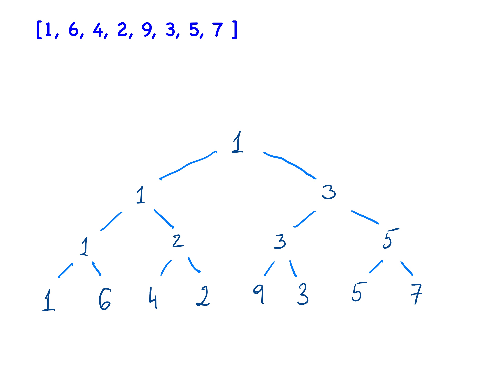] ] -- .right-column2[ when PROPERTY = sum .center[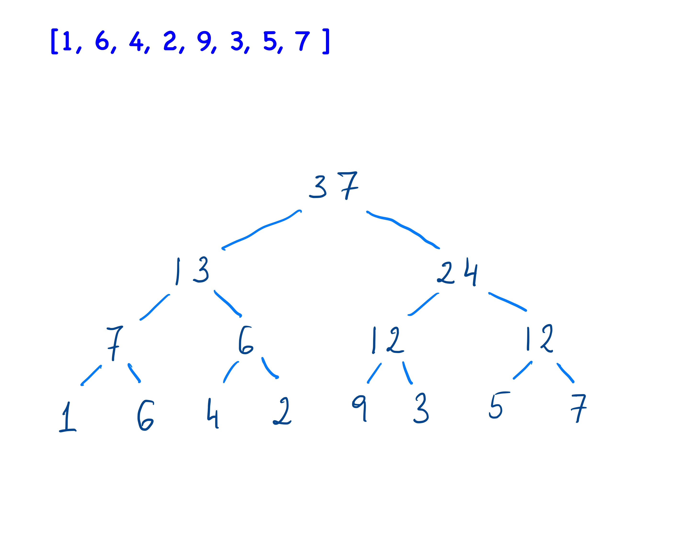] ] --- ## Segment Trees - For `N` values, the root stores the information for the entire range `[1,N]` (or `[0,N-1]` for zero indexed arrays). -- - If a node `x` holds information about the range of indexes `[l, r]`, then its left child stores the information about the range of indexes `[l,m]` and its right child stores the information about the the range of indexes `[m+1, r]`, where `m=(l+r)/2`. -- .center[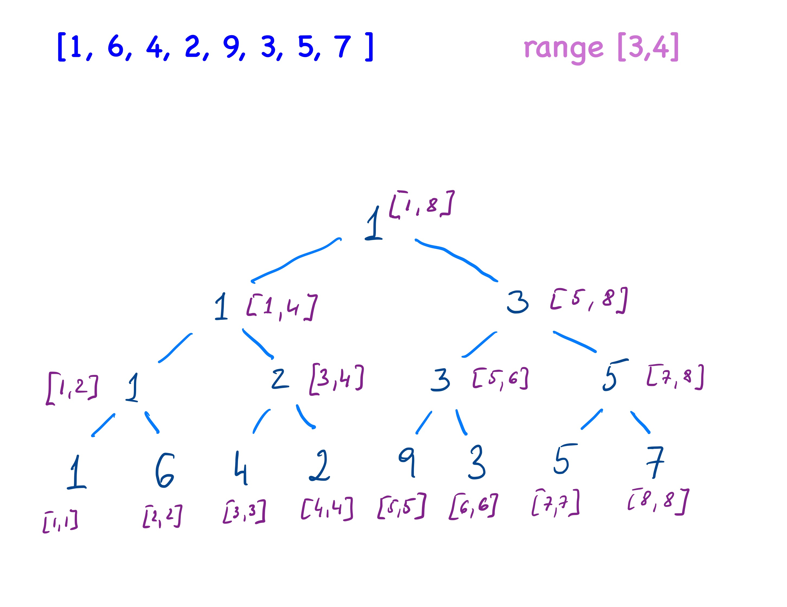] --- name:range_examples ## Segment Trees - In order to answer a particular query for a range `[l,r]` we want to identify the set of nodes storing information about all the values within the range. To minimize the processing time, the nodes should be as high in the tree as possible: if we can get the information from two nodes sharing a parent, then we should get the information from the parent instead (check one node, instead of two). --- template:range_examples .center[] --- template:range_examples .center[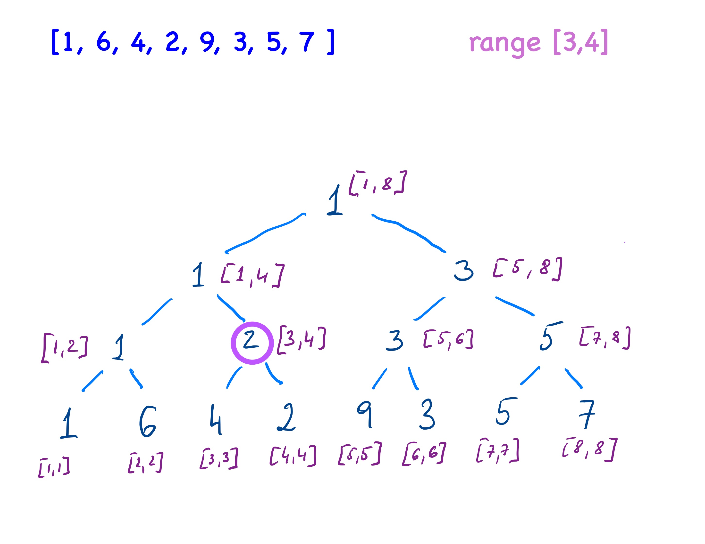] --- template:range_examples .center[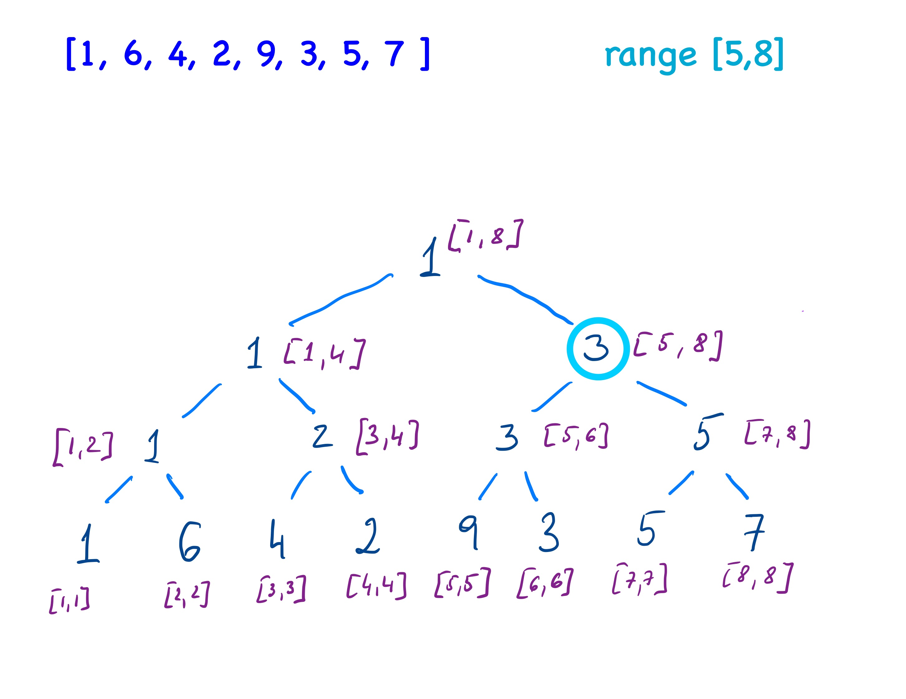] --- template:range_examples .center[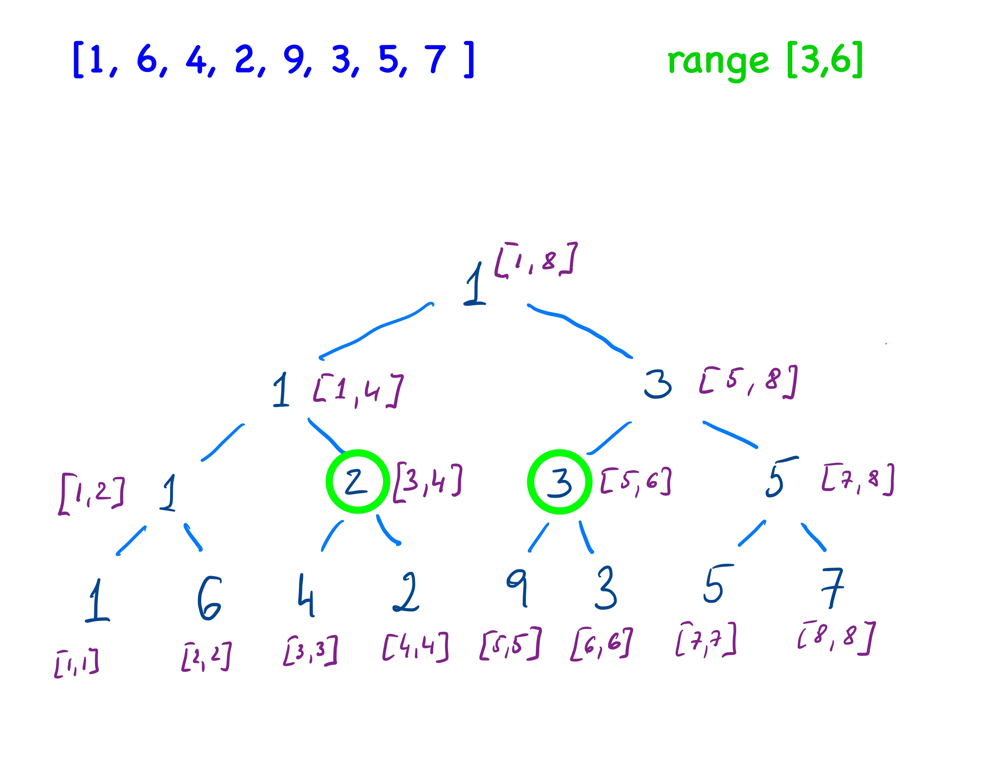] --- template:range_examples .center[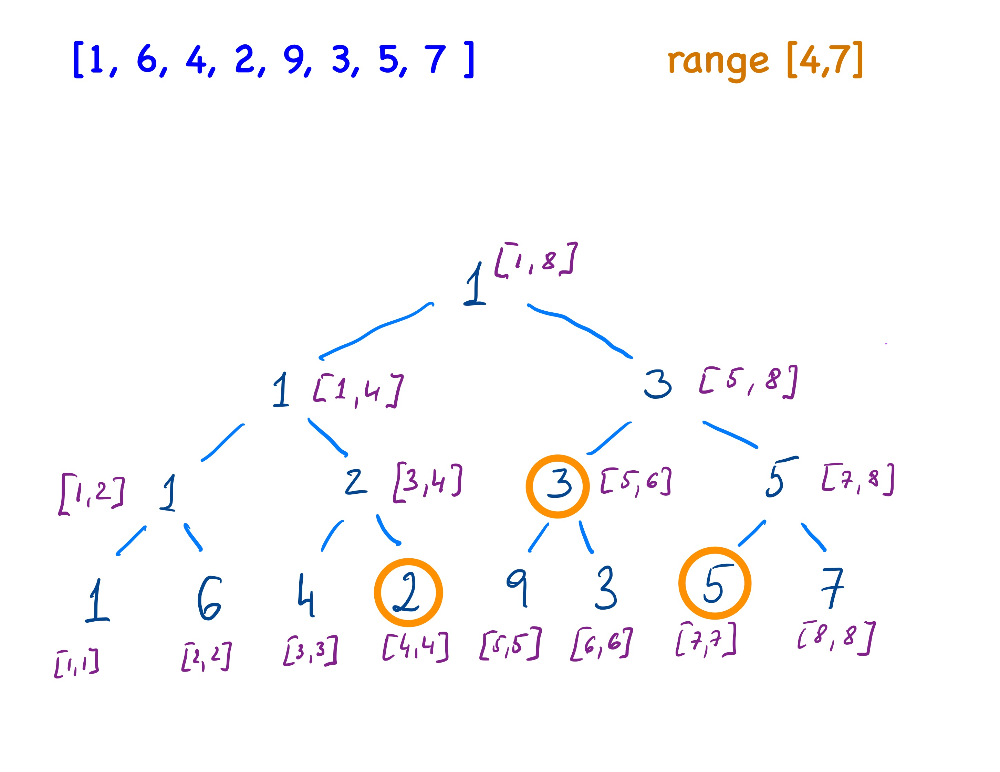] --- ## Segment Trees - Update Operation As with square root decomposition, __updating/changing__ a value in the original data does not require re-computation of the entire tree. We only need to update values stored in a single path through the tree (from the leaf representing the changed value, up to the parent). This is O(log N) operation. --- ## Segment Trees - Implementation Segment trees are stored in an array in a similar way that heaps are stored. -- - For a node at index `i`, its two children are at indexes `2i + 1` and `2i + 2`. - The root for the tree is at index 0. - (You can also leave the index 0 empty and store the root at index 1. The for any node at index `i` its two children are at indexes `2i` and `2i + 1`.) -- __Building a segment tree for an array `A[0..N-1]` to be used for queries about the smallest value__ ``` A[N] - original array with data ST[ NUM_OF_NODES ] - the segment tree NUM_OF_NODES = ??? * N k - index that stores information about the range [l,r] build ( k, l, r ) if l == r ST[k] = A[l] else m = (l+r)/2 build( 2k+1, l, m) build( 2k+2, m+1, r) ST[k] = min ( ST[2k+1], ST[2k+2]) ``` The last line will change if we are computing a different property than the smallest value. -- Building an initial segment tree takes O(??? * N) since we need to populate values in the ST array. --- ### What should be the size of the segment tree array? - __2N__ - this is a definite minimum, because when N is a power of two, there are N-1 additional internal nodes, -- but is it enough? -- name:other_size __What happens when N is not a power of two?__ --- template:other_size __Reminder__ <br> If a node `x` holds information about the range of indexes `[l, r]`, then its left child stores the information about the range of indexes `[l,m]` and its right child stores the information about the the range of indexes `[m+1, r]`, where `m=(l+r)/2`. --- template:other_size Let N = 10, then root should store the info for nodes in the range [1,10]: -- .center[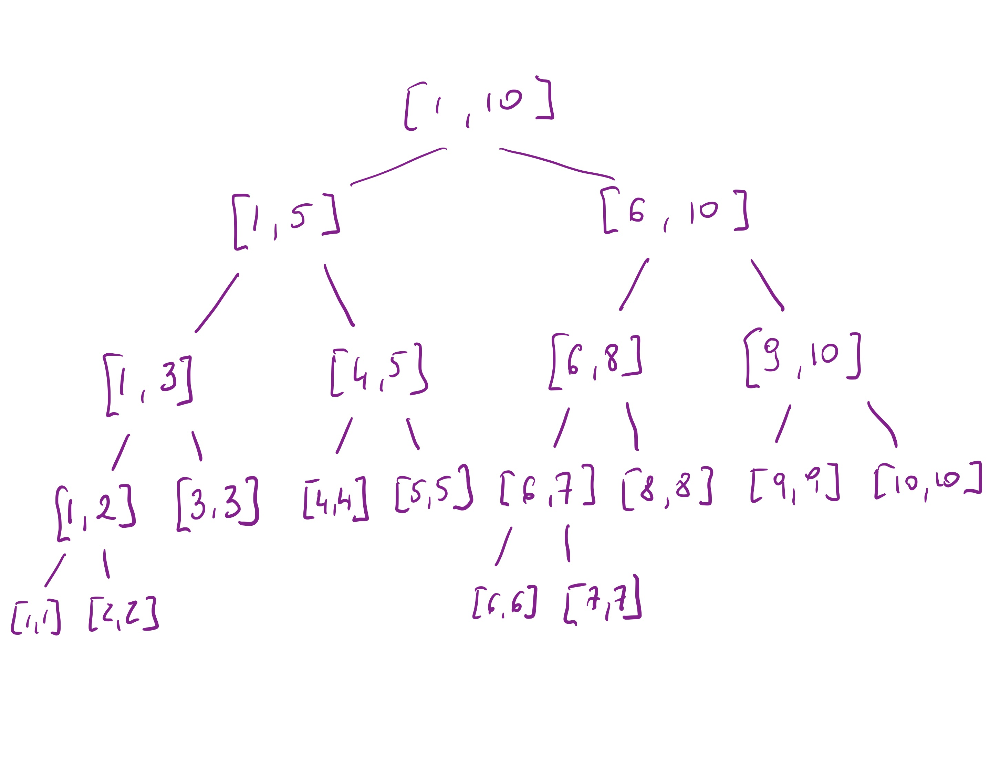] --- template:other_size Let N = 10, then root should store the info for nodes in the range [1,10]: .center[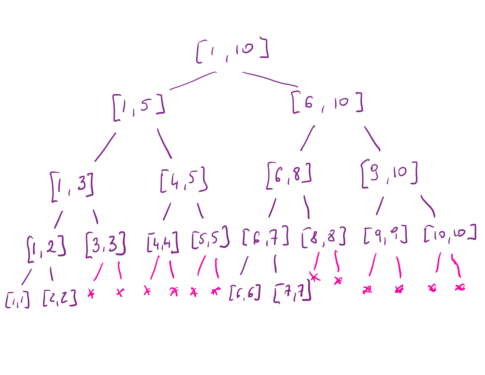] --- template:other_size Let N = 10, then root should store the info for nodes in the range [1,10]: .center[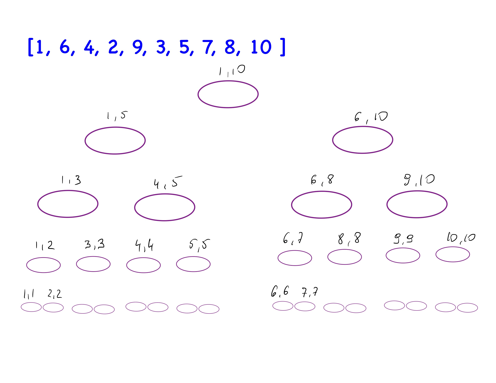] This construction requires 31 nodes (well, we could skip the last six and bring the number down to 29). --- template:other_size Let N = 10, then root should store the info for nodes in the range [1,10]: .center[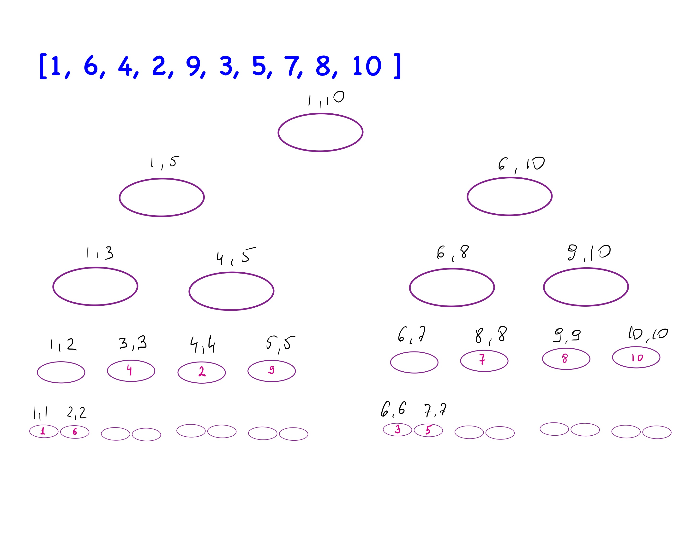] The data items end up in the nodes that correspond to single element ranges. --- template:other_size Let N = 10, then root should store the info for nodes in the range [1,10]: .center[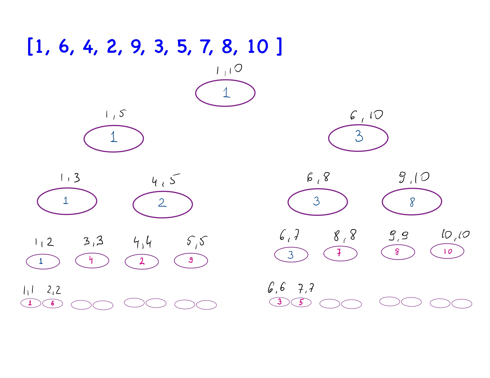] Finally, we populate the internal nodes with values following the PROPERTY for this segment tree (smallest is used above). --- ## Size of The Segment Tree - In general the number of nodes we will need is related to __the smallest power of two larger than N__, call this __T__. -- - The number of nodes needed in the segment tree is __2T-1__ - this guarantees that for every internal node we can safely access its two children nodes using the 2k+1 and 2k+2 formulas for indexes. -- - The _worst case_ for T is when N is just one more than the previous power of two, because then T = 2(N-1), and we need additional T-1 nodes for internal node. The total we need is 2(N-1) + 2(N-1) - 1 = 4N - 5. -- - So using 4N as size of the segment tree is safe and still guarantees performance of building such a tree to be O(N). (Note that during building the tree we do not really access the array locations that do not correspond to valid ranges. Those array locations are just _space-holders_ that make sure our formulas work.) --- ## Finding the Answer for a Range `[l,r]` When searching for the smallest value in a given range, the search starts at the root of the tree and traverses down the tree eliminating nodes that represent ranges with no overlap with the desired range. -- ``` k - the node that covers range [currentL, currentR] [l,r] - the range of interest rangeMin - returns the smallest element in [l,r] rangeMin(k, currentL, currentR, l, r) //node k is outside of the range of interest, ignore it if r < currentL || l > currentR return INF //node k is entirely within the range of interest, use its min if l <= currentL && currentR <= r return ST[k] //otherwise we need to get further down into the tree m = (currentL+currentR) / 2 leftMin = rangeMin(2k+1, currentLeft, m, l, r) rightMin = rangeMin(2k+2, m+1, currentRigth, l, r) return min (leftMin, rightMin) ``` A single query takes O(logN) using a segment tree. --- ## Update a Value in `A[]` __Challenge:__ Write an algorithm that modifies the segment tree after a single value in the original array was modified, i.e., `A[x]` now has a value of `v`. -- ``` k - the node that covers range [currentL, currentR] x - index in A where the change occurs v - new value for A[x] update( k, currentL, currentR, x, v) //x is not within the scope of node k if x < currentL || currentR < x return //node k represent x itself, or rather range [x,x], update the value if x == currentL == currentR ST[k] = v return //otherwise we need to get further down into the tree m = (currentL + currentR)/2 update( 2k+1, currentL, m, x, v) update( 2k+2, m+1, currentR, x, v) //update the value at node k based on the updated children ST[k] = min(ST[2k+1], ST[2k+2]) ``` <br> This update process takes O(logN). --- class: challenge ## Matchsticks There are `N` matchsticks in total. They are numbered from `0` to `N−1` inclusive. The `i`th matchstick takes `bi` time to burn when lighted at one end, and it burns at a uniform rate. If lit at both ends simultaneously, the matchstick will take only half of the original time to burn down. Arrangement: Ally ties rear end of the all the matchsticks together and the front end is kept free. The matchstick numbered `i` is adjacent to matchstick numbered `i+1` for all `0 <= i <= N−2`. Bodies of matchsticks do not touch each other, except at the rear end. Task: There are Q queries, in each query we ask: If Ally lights the free end of all matchsticks numbered between `L` and `R` inclusive, what will be the time needed for all matchsticks to get completely burnt? --- class: challenge .left-column2[ ## Matchsticks __Input__ First line of input contains a single integer `N`. The next line contains `N` space separated integers, the `i`th of which is `bi`. The next line contains a single integer `Q`. The next `Q` lines each contain two space separated integers: `L` and `R`. The `i`th line represents the `i`th query. __Output__ For each query, print the answer on a new line. ] .right-column2[ __Input__ ``` 1 5 1 0 0 ``` __Output__ ``` 5.0 ``` __Input__ ``` 4 3 5 9 1 2 0 1 2 3 ``` __Output__ ``` 12.0 6.0 ``` __Input__ ``` 18 3 4 2 1 5 7 9 7 10 5 12 3 1 1 2 1 3 2 1 4 10 ``` __Output__ ``` 9.0 ``` ] --- class:challenge ## Treaps A binary tree in which each internal node has both a label and a priority, and which is both a binary search tree with respect to the labels and a heap with respect to the priorities, is called a __treap__. Your task is, given a set of label-priority-pairs, with unique labels and unique priorities, to construct a treap containing this data. __Input__ The input contains several test cases. Every test case starts with an integer `n`. You may assume that `1<=n<=50000`. Then follow n pairs of strings and numbers `l1/p1,...,ln/pn` denoting the label and priority of each node. The strings are non-empty and composed of lower-case letters, and the numbers are non-negative integers. The last test case is followed by a zero. __Output__ For each test case output on a single line a treap that contains the specified nodes. A treap is printed as (< left sub-treap >< label >/< priority >< right sub-treap >). The sub-treaps are printed recursively, and omitted if leafs. __Example__ .left-column2[ ``` Input 7 a/7 b/6 c/5 d/4 e/3 f/2 g/1 7 a/1 b/2 c/3 d/4 e/5 f/6 g/7 7 a/3 b/6 c/4 d/7 e/2 f/5 g/1 0 ``` ] .right-column2[ ``` Output (a/7(b/6(c/5(d/4(e/3(f/2(g/1))))))) (((((((a/1)b/2)c/3)d/4)e/5)f/6)g/7) (((a/3)b/6(c/4))d/7((e/2)f/5(g/1))) ``` ] --- class: challenge ## Treeps - Another Example How do we build a treap from the following values A/54 I/16 K/39 E/36 B/42 G/55 D/49 H/56 C/58 J/40 F/5 </optgroup>